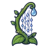
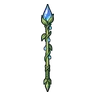
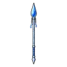
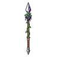

สไลม์น้ำใส
มอนธาตุน้ำ Lv 8–19
เจอที่
| แมพ | โซน | Lv | ในแมพ | ภูมิภาค |
|---|---|---|---|---|
| ทุ่งหญ้าแสงจันทร์ | 8–16 | ≈44 | ป่ากองไฟ | |
| เนินแอปเปิลป่า | ต้นแอปเปิลชิงช้าขาด | 8–16 | ≈22 | ป่ากองไฟ |
| ทุ่งดอกแดนดิไลออนยักษ์ | ดอกแดนดิไลออนยักษ์ | 8–16 | ≈22 | ป่ากองไฟ |
| สวนรังผึ้งร้าง | ต้นไม้รวงผึ้งยักษ์ | 8–16 | ≈22 | ป่ากองไฟ |
| บึงกบลำธารใส | 12–18 | ≈20 | ป่ากองไฟ | |
| ทุ่งหญ้าสูงท่วมหัว | 14–19 | ≈17 | ป่ากองไฟ | |
| เขื่อนบีเวอร์ร้าง | 12–19 | ≈12 | ป่ากองไฟ | |
| ดงกกท่วมหัว | 12–19 | ≈12 | ป่ากองไฟ | |
| กระท่อมรมควันปลาไหล | 12–19 | ≈12 | ป่ากองไฟ |
≈ จำนวนที่อยู่ในแมพพร้อมกันโดยเฉลี่ย คิดจากไฟล์เกม (จุดเกิดของแมพ × 4 แบ่งตามสัดส่วนของแต่ละตัว) ตายแล้วเกิดใหม่ที่เดิมใน 22 วินาที · ตอนเล่นออนไลน์เซิร์ฟเวอร์เป็นคนเกิดมอน อาจไม่ตรง
ค่าสถานะตามเลเวล
| Lv | HP | ATK | DEF | MDEF | EXP | Job |
|---|---|---|---|---|---|---|
| 8 | 571 | 14–21 | 1 | 3 | 10 | 7 |
| 13 | 943 | 21–31 | 2 | 5 | 14 | 9 |
| 19 | 1,270 | 28–41 | 3 | 7 | 18 | 12 |
ตีด้วยธาตุไหนดี
แรงขึ้น: ลม ×1.75
เบาลง: ไฟ ×0.5 น้ำ ×0.25
วัตถุดิบที่ดรอป
| ของ | โอกาส | |
|---|---|---|
| หยดเจลน้ำใส | 65% | 1 ชิ้น (15% ได้ 2) |
อุปกรณ์ที่ดรอป (10)
| ของ | โอกาส |
|---|---|
| 0.12% | |
| 0.06% | |
| 0.06% | |
 เครื่องดนตรีหยดน้ำค้าง | 0.06% |
 หอกยาวหยดน้ำค้าง | 0.06% |
 หอกยาวสายฝน | 0.06% |
 หอกยาวผลเบอร์รี่พิษ | 0.06% |
| 0.06% | |
| 0.06% | |
| 0.06% |
สกิล
แอ่ง (Lv 25+) · แอ่ง (Lv 60+) · ปาตกใส่ (Lv 60+)